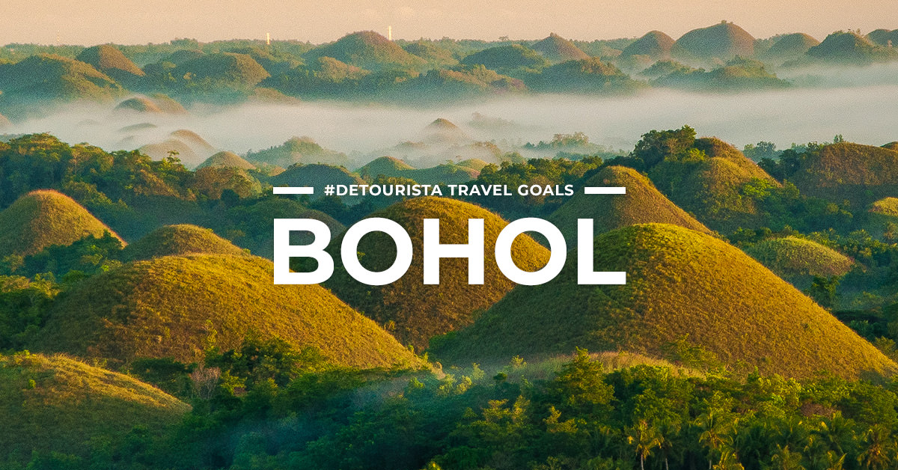
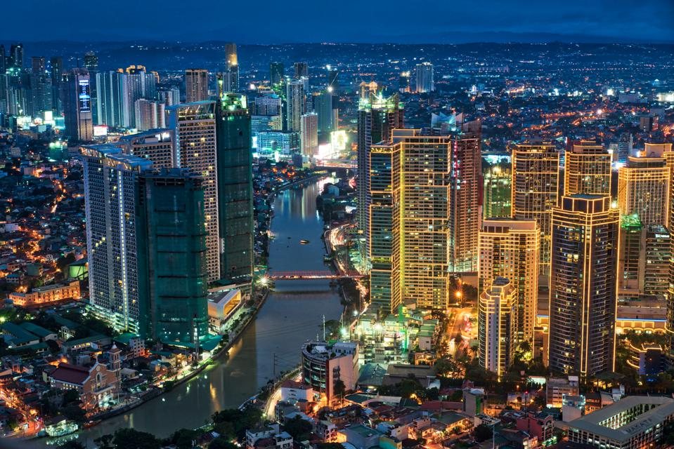
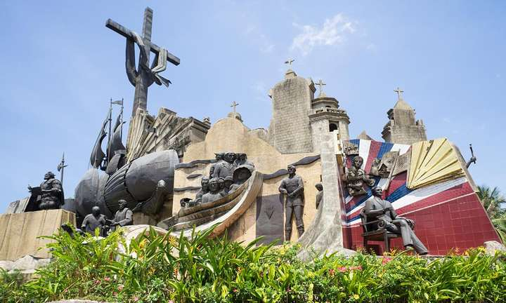
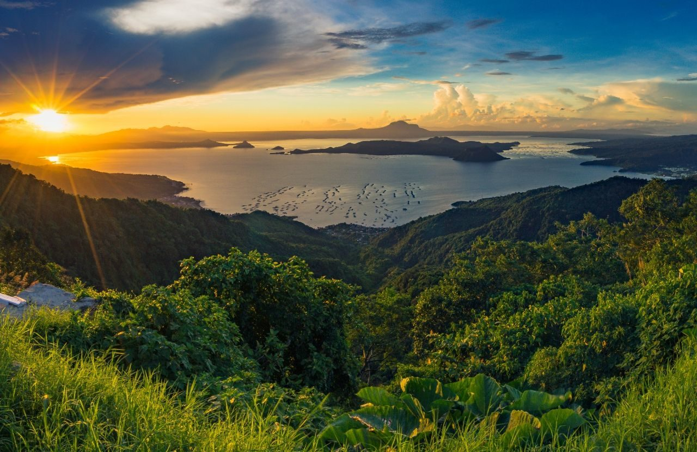
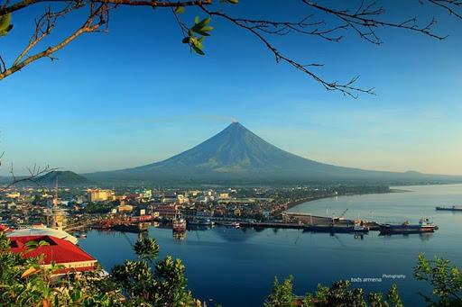
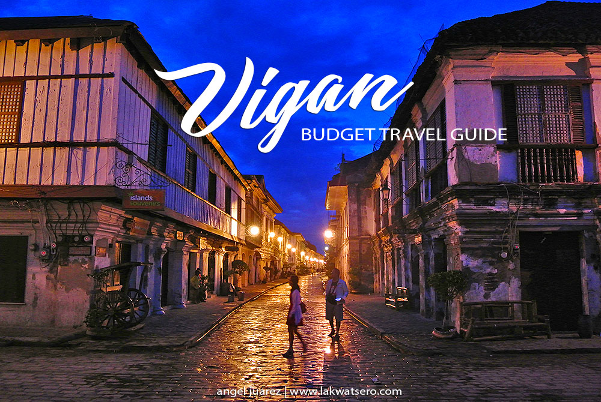
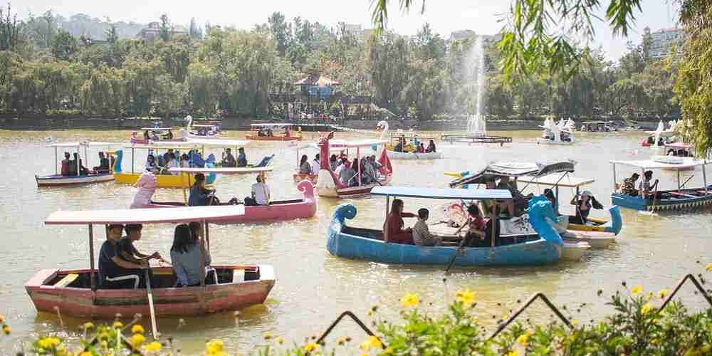

"Hello Boracay!"

- The best time to visit Boracay is during the dry season, which starts in November and runs through April.
- Places to visit:
- Island Hopping
- Banana Boat Ride
- White Beach
"Hello Bohol!"

- From November to April, it is the Northeast Monsoon but it is usually short rains and then a sunny day. The weather during this period is great with not too hot temperatures around 28°C.
- From May to July, it is the hottest time with high humidity. You can expect an average of 32°C.
- From August to October, it is the Southwest Monsoon with a mix of sunny and rainy days.
- Tip: If you want to see Dolphins, the best time to see them is from March to June.
- Places to visit:
- Chocolate Hills
- Tarsier Sanctuary
- Island Hopping
- Beaches
"Hello Palawan!"
- The months of December to May are the best time to go to Palawan if you want to make the most out of your visit.
- Places to visit:
- El Nido
- Puerto Princesa
- Coron & Calamian Islands
- Tubataha Reef
"Hello Siargao!"

- If you prefer to go swimming or go on island-hopping trips in Siargao, March to September are the ideal months to go. These months receive the least rainfall, so you’ll be able to fully-enjoy any water activities.
- Places to visit
- Surf Cloud 9's World Famous Wave
- Sohoton COve National Park
- Corregidor Island
"Hello Ifugao!"

- The best time to visit the region Ifugao in the Philippines is from january until march and november and december, when you will have a pleasant temperature and little rainfall.
- Places to visit:
- Hungduan Rice Terraces
- Kiangan Shrine
- Tenogtog Falls
"Hello Manila!"

- The best time to visit Manila is from January to April. During these 4 months, average temperatures stay around 27°C, with a minimum of 22°C, and a maximum of 34°C.
- Places to visit:
- Rizal Park
- Fort Santiago
- San Agustin Church
"Hello Cebu!"

- The best time to visit Cebu is during the cold season.
- The colorful Sinulog Festival is held in January where you can see the culture of Cebu at its best
- Places to visit:
- Cebu Taoist Temple
- Sirao Flower Garden
- 10,000 Roses of Cebu
- Magellan's Cross
"Hello Tagaytay!"

- The best time to visit Tagaytay would be in the dry season, namely November to March.
- Places to visit:
- Taal Volcano
- People's Park in the Sky
- Puzzle Mansion
- Fantasy World
"Hello Legaspi!"

- The best month to visit Legazpi is from December to May
- Places to visit:
- Mayon Volcano & Cagsawa Ruins
- Daraga Church
- Lignon Hill Nature Park
- Quitinday Underground RIver
"Hello Vigan!"

- THe best time to visit VIgan for ideal weather are November 5th to May 6th.
- Place to visit:
- Calle Crisologo
- Vigan Cathedral
- Baluarte Resort
- Plaze Salcedo
"Hello Baguio City!"

- The best month for good weather in Baguio are January, February, March and December.
- Places to visit:
- Burnham Park
- Camp John Hay
- Mines View Park
- Night Market